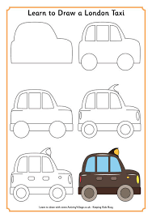
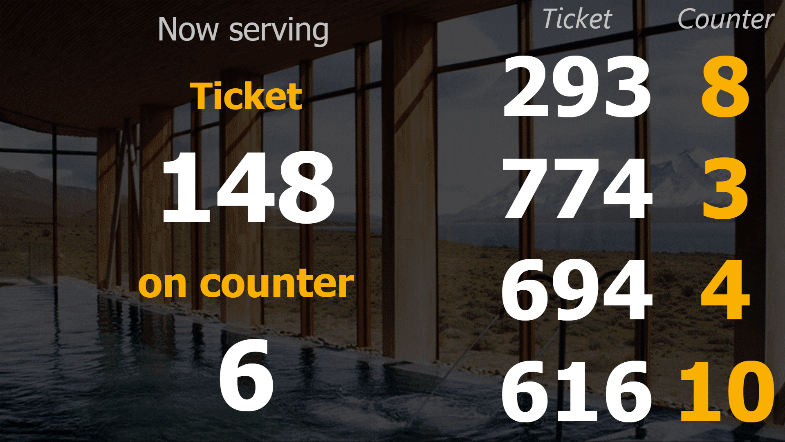

In Defence of Style Guides
Balisage 2018
Ari Nordström | ari.nordstrom@gmail.com
The semantics should be obvious
The semantics are, um, less than clear
Let's have a look at some tags with a similar theme...
...a list
A common way to write a list is
<para>Here are my favourite films:
<list>
<item>Close Encounters of the Third Kind</item>
<item>2001</item>
<item>Amadeus</item>
</list>
</para>
How I read it
Here are my favourite films: Close Encounters of the Third Kind, 2001, and Amadeus.
What they (usually) mean
- Here are my favourite films:
- Close Encounters of the Third Kind
- 2001
- Amadeus
Just as many write
<para>Here are my favourite films:</para>
<list>
<item>Close Encounters of the Third Kind</item>
<item>2001</item>
<item>Amadeus</item>
</list>
...but this is poor semantics
...see, we actually want this
<!ELEMENT list (para, item+)>
Sometimes people expand the model further
<!ELEMENT list (title?, (para | note | warning)*,
(item | bridge)+)>
...and sometimes they are right
...or?
<!ELEMENT list (title?, (para | note | warning | graphic | table)*,
(item | bridge | graphic | table)+)>
<!ATTLIST list type (bullet | number | alpha) #REQUIRED
size (small | medium | large) #IMPLIED
role CDATA #IMPLIED >
...no, not all this!
they put them in because somebody somewhere did, for some reason
or because it looked pretty
But sometimes it is simply about looking pretty...
...or is it?
<core:para-grp>
<core:desig value="17">17.</core:desig>
<core:title>General financial arrangements.</core:title>
<core:para>The following are to be paid out ...:</core:para>
<core:list type="number">
<core:listitem>...</core:listitem>
...
</core:list>
...
<core:para>The following are to be paid out ...:</core:para>
<core:list type="lower-alpha">
<core:listitem>...</core:listitem>
...
</core:list>
...
</core:para-grp>
I looked up the DTD...
<!ATTLIST core:list
type ( bullet | check-box | lower-alpha |
lower-roman | mdash | ndash | number |
plain | upper-alpha | upper-roman |
upper-alpha-alpha | lower-alpha-alpha |
smallcaps-alpha-alpha )
#REQUIRED
restart (yes | no) 'yes'
source-pnum CDATA #IMPLIED
%display-atts;
lni CDATA #IMPLIED
>
...this is actually as it should be
Authors don't always understand the whys, though...
...so this sort of thing happens:
Follow these steps:
- Do this.
- Then do this.
- And finally do this.
Why does it happen?
And exactly what happens?
Remember this?
Follow these steps:
- Do this.
- Then do this.
- And finally do this.
It's not an unordered list
It's not an ordered list
It's a procedure
The bullets are a misguided attempt at looking pretty
I'm sure we've all seen this sort of thing
<emphasis type="bold italic">emphasised content</emphasis>
Spare part? GUI object? Legal term? Some random important word with pretty formatting?
So?
We've analysed docs
We've created a DTD that describes them
We've (hopefully) identified the various types of lists
We've (maybe) identified inline semantics
But I'm betting we haven't described how and when to use any of them.
It could be that it really is about looking pretty and nothing more.
It could be that the analysis didn't discover the why.
Or it could be that different writers do the same thing differently.
Or, conversely, that this writer simply did what the previous writer did.
We don't know unless you tell us.
What should we do about it?
Schematron? Schematron Quick Fixes?
Where do the schematron patterns come from?
In the olden days, a house style was described by a style guide

What is a style guide?
Think of it as a poet's schema.
Think of it as the basis for the Schematron rules.
For example...
Remember those list variants?
Always introduce a list with a paragraph that explains the list's purpose. The introductory paragraph is not a title; rather, it is a qualifier, giving the list its proper context.
Never use an ordered list when you are writing a procedure (and don't even consider writing it using an unordered list).
Never insert a list or its introductory text inside a paragraph unless you intend to present your list inline.
(etc)
OK, so my lists may not be perfect, but...
A Cautionary Tale
So, how do I get one?
Ideally...
Info analysis -> Style guide
Info analysis -> DTD
(Rinse and repeat)
In practice...
New info analysis
Existing docs, schemas..
Common Schematron errors...
Define new house style (and kill your darlings)
Separation of concerns
Schema checks structure, Schematron the styles defined in a style guide
...allowing the schema to remain small
About roles
Tell me, do you employ editors?
What does an editor do?
An editor, of course, is the person who makes sure that everyone follows the style guide, is the final arbiter of all things style, and frequently the one who edits the style guide.
The Schematron should check rules defined in a style guide, not define it.
A Schematron checks content after the fact; the style guide allows content to be created that avoids the errors to begin with.
Queues reinvented
Simplifies the model
Separation of concerns
Not buying this. Where's the style guide in that thing?
148 (6)
293 (8)
774 (3)
694 (4)
616 (10)
102 (9)
X (5)
602 (2)
X (7)
X (1)
- Don't display any unmanned counters.
- Show the latest update in a larger font.
- Limit the number of counters shown.
- ...
Thank you